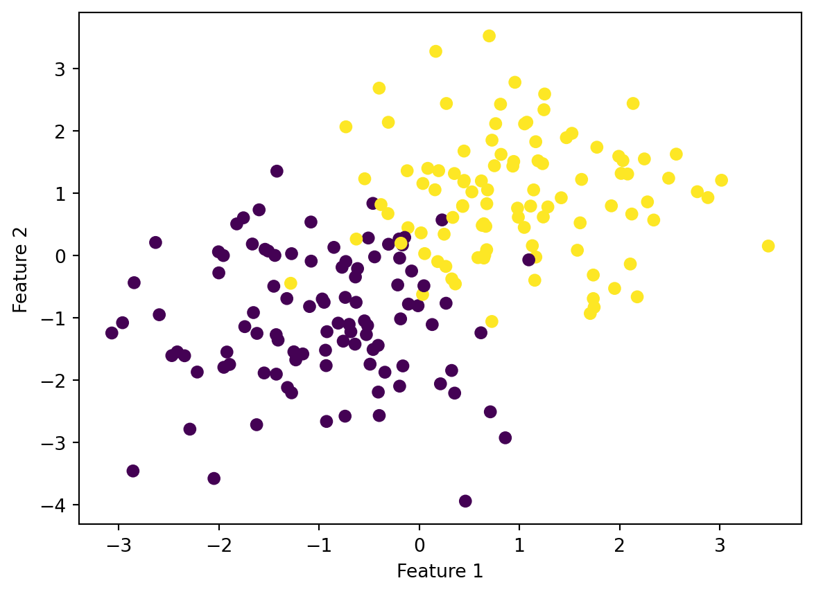

In this blog post, you’ll implement several first-order methods: optimization algorithms based on the gradients of functions. You’ll implement simple gradient descent, a momentum method, and stochastic gradient descent, comparing their performance for training logistic regression.
In , we introduced the gradient descent algorithm for optimization and showed it in action for the logistic regression problem. In this blog post, you’ll:
Implement gradient descent for logistic regression in an object-oriented paradigm.
Implement a key variant of gradient descent called stochastic gradient descent, including an optional momentum feature.
Perform several simple experiments on synthetic data to see which of these algorithms converges most quickly to a satisfactory logistic regression model.
1. Implement Logistic Regression
In your source file, implement a LogisticRegression() class. Your class should have similar user-facing functions as the Perceptron() class from the previous blog post. These are:
LogisticRegression.fit(X, y) is the primary method. This method has no return value. If LR is a LogisticRegression object, then after LR.fit(X, y) is called, LR should have an instance variable of weights called w. This w is the vector of weights, including the bias term \(b\). LR should have an instance variable called LR.loss_history which is a list of the evolution of the loss over the training period (see LogisticRegression.loss(X, y) below). Finally, LR should have an instance variable called LR.score_history which is a list of the evolution of the score over the training period (see LogisticRegression.score(X, y) below).
LogisticRegression.predict(X) should return a vector \(\hat{\vy} \in \{0,1\}^n\) of predicted labels. These are the model’s predictions for the labels on the data.
LogisticRegression.score(X, y) should return the accuracy of the predictions as a number between 0 and 1, with 1 corresponding to perfect classification.
LogisticRegression.loss(X, y) should return the overall loss (empirical risk) of the current weights on X and y.
Gradient Descent
Your LogisticRegression.fit method should use gradient descent as described in lecture. Allow the user to specify the learning rate \(\alpha\) and the maximum number of iterations, which for this blog post we’ll call epochs. So, using the fit method might look like this:
from solutions.logistic import LogisticRegression # your source codefrom sklearn.datasets import make_blobsfrom matplotlib import pyplot as pltimport numpy as npnp.seterr(all='ignore') # make the datap_features =3X, y = make_blobs(n_samples =200, n_features = p_features -1, centers = [(-1, -1), (1, 1)])fig = plt.scatter(X[:,0], X[:,1], c = y)xlab = plt.xlabel("Feature 1")ylab = plt.ylabel("Feature 2")
# fit the modelLR = LogisticRegression()LR.fit(X, y, alpha =0.1, max_epochs =1000)# inspect the fitted value of wLR.w fig = plt.scatter(X[:,0], X[:,1], c = y)xlab = plt.xlabel("Feature 1")ylab = plt.ylabel("Feature 2")

Stochastic Gradient Descent
Now implement an alternative version of the fit method called fit_stochastic. In this method, you will implement stochastic gradient descent. In stochastic gradient descent, we don’t compute the complete gradient
The size of \(S\) is called the batch size. Typically, we cycle through all the points \(1\) through \(n\) in the following way:
Shuffle the points randomly.
Pick the first \(k\) random points, compute the stochastic gradient, and then perform an update.
Pick the next \(k\) random points and repeat..
When we have gone through all \(n\) points, reshuffle them all randomly and proceed again.
This process can be accomplished efficiently using the np.array_split() function, which will create batches for you. Here is some code to get you started; it will split the data into batches of size batch_size
n = X.shape[0]for j in np.arange(m_epochs): order = np.arange(n) np.random.shuffle(order)for batch in np.array_split(order, n // batch_size +1): x_batch = X[batch,:] y_batch = y[batch] grad = gradient(w, x_batch, y_batch) # perform the gradient step# ...
For stochastic gradient descent, only update self.loss_historyat the end of each epoch. This allows us to compare to regular gradient descent, since in both algorithms at the end of an epoch we have used every single point once.
Momentum (Optional)
The momentum method is described on p. 85 of Hardt and Recht. Implement the momentum method for stochastic gradient descent. My advice is to do so as an optional parameter for fit_stochastic. In my implementation, if the user sets momentum = True then I set the parameter \(\beta\) from Hardt and Recht to value 0.8. Otherwise it is set to 0, and we have regular gradient descent.
Illustration
Here is an example plot showing the evolution of the loss function for the three algorithms:
Evolution of the training loss for three optimization algorithms.
For these settings, stochastic gradient descent with and without momentum tends to get to a “pretty good” result faster than standard gradient descent, but these random algorithms can “bounce around” near the good solution. Standard gradient descent might need more epochs to find a good solution, but quickly “settles down” once it finds it.
2. Perform Experiments
After you have tested and implemented your class, please perform experiments in which you show examples of the following phenomena:
A case in which gradient descent does not converge to a minimizer because the learning rate \(\alpha\) is too large.
A case in which the choice of batch size influences how quickly the algorithm converges.
If you implemented momentum, a case in which the use of momentum significantly speeds up convergence.
In at least one of these experiments, generate some synthetic data (it’s fine to use make_blobs) for data of at least 10 feature dimensions.
3. Document and Write
Please include informative comments throughout your source code, and a thorough docstring for each of your fit and fit_stochastic methods.
In your blog post, please describe both your approach to implementing your algorithm and the findings of your experiments.
4. Submit
Submit your blog post, making sure to include a link to the online version of your source code at the top of your post.
Tips and Hints
Most of the major math functions are shown in our lecture on gradient descent. You’re welcome to use any of these functions as you wish; please just incorporate comments in your code and blog post to cite where they came from.
If you compute the gradient using matrix-vector operations in numpy (recommended, no for-loops!), you may find it useful at some point to convert an np.array() of shape (n,) to an np.array() of shape (n,1) like this:
and called it at a few strategic places in my implementation.
My complete implementation, including all the math functions, momentum, etc. but excluding comments, was about 100 lines of code.
You’re welcome to find creative ways to visualize your findings. You might also find it interesting to visualize the score (not just the loss). However, this is optional.